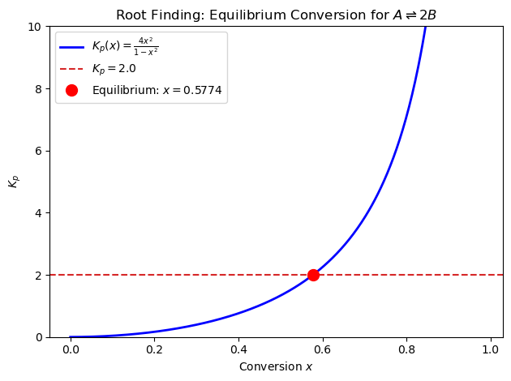
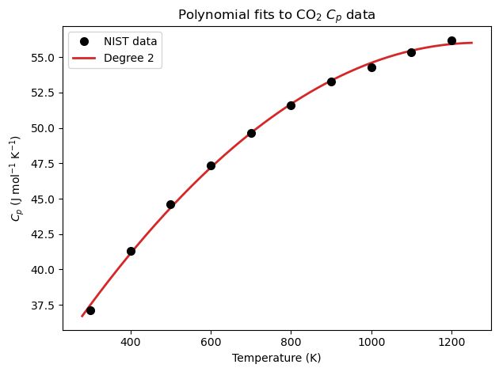
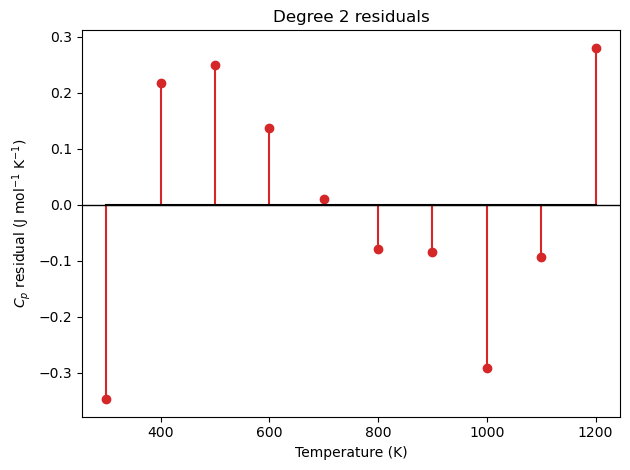
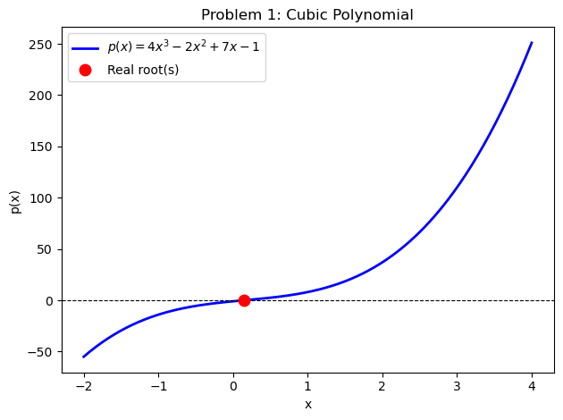
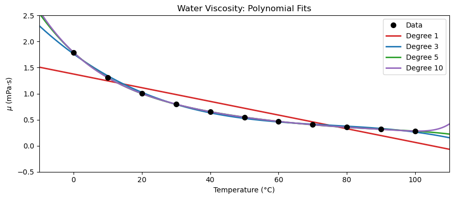

Lab 07: Polynomials#
Examples (by instructor)#
In this lab, you’ll learn to work with polynomials in NumPy: creating and evaluating polynomial objects, fitting data with least-squares polynomial regression, and assessing fit quality with residuals, MAE, MSE, and \(R^2\).
Example 1: Polynomial Basics — np.poly1d, np.polyval#
A degree-\(n\) polynomial is:
NumPy stores coefficients in descending order (highest power first).
Function |
Purpose |
|---|---|
|
Create a callable polynomial object |
|
Evaluate polynomial at \(x\) |
|
Least-squares fit — returns coefficients |
Define \(p(x) = 2x^3 - 3x^2 + x - 5\) and:
Print its
poly1drepresentationEvaluate it at \(x = 2\) using both
poly1dandpolyvalPrint its derivative and its roots
import numpy as np
import matplotlib.pyplot as plt
# Define p(x) = 2x^3 - 3x^2 + x - 5 (coefficients in descending order)
coeffs = [2, -3, 1, -5]
p = np.poly1d(coeffs)
print("Polynomial p(x):")
print(p)
# Evaluate at x = 2
x_val = 2.0
print(f"\np({x_val}) using poly1d : {p(x_val):.4f}")
print(f"p({x_val}) using polyval : {np.polyval(coeffs, x_val):.4f}")
# Manual: 2(8) - 3(4) + 1(2) - 5 = 16 - 12 + 2 - 5 = 1
print(f"Manual check : {2*x_val**3 - 3*x_val**2 + 1*x_val - 5:.4f}")
print("\nDerivative p'(x):")
print(p.deriv())
print("Roots (p(x) = 0):", p.roots.round(4))
Polynomial p(x):
3 2
2 x - 3 x + 1 x - 5
p(2.0) using poly1d : 1.0000
p(2.0) using polyval : 1.0000
Manual check : 1.0000
Derivative p'(x):
2
6 x - 6 x + 1
Roots (p(x) = 0): [ 1.9186+0.j -0.2093+1.1222j -0.2093-1.1222j]
Example 2: Root Finding — Chemical Equilibrium#
In chemical engineering, we often need to find where a polynomial equals zero. A classic example is solving an equilibrium expression that reduces to a polynomial equation.
Problem: The equilibrium conversion \(x\) for the gas-phase reaction \(A \rightleftharpoons 2B\) at constant \(T\) and \(P\) satisfies:
Rearranging for \(K_p = 2.0\):
This is a degree-2 polynomial in \(x\). We will:
Express it as
np.poly1dand find its roots viap.rootsKeep only the physically meaningful root (\(0 < x < 1\))
import numpy as np
import matplotlib.pyplot as plt
Kp = 2.0
# Polynomial: (4 + Kp)*x^2 - Kp = 0
# coefficients in descending order: [4 + Kp, 0, -Kp]
coeffs = [4 + Kp, 0, -Kp]
p = np.poly1d(coeffs)
print("Equilibrium polynomial p(x) =")
print(p)
# Find all roots
roots = p.roots
print(f"\nAll roots: {roots.round(6)}")
# Keep only the physically meaningful root: real, 0 < x < 1
real_roots = roots[np.isreal(roots)].real
x_eq = real_roots[(real_roots > 0) & (real_roots < 1)] # Boolean indexing: This keeps only the elements where the condition is True.
print(f"Physical root (0 < x < 1): x = {x_eq[0]:.6f}")
# Verify: Kp = 4x² / (1 - x²)
x_sol = x_eq[0]
Kp_check = 4 * x_sol**2 / (1 - x_sol**2)
print(f"\nVerification: Kp = 4x²/(1-x²) = {Kp_check:.6f} (expected {Kp})")
# Plot Kp(x) = 4x² / (1 - x²) and mark the solution
x = np.linspace(0, 0.98, 400)
Kp_curve = 4 * x**2 / (1 - x**2)
plt.plot(x, Kp_curve, 'b-', linewidth=2, label=r'$K_p(x) = \frac{4x^2}{1-x^2}$')
plt.axhline(Kp, color='tab:red', linestyle='--', linewidth=1.5, label=f'$K_p = {Kp}$')
plt.plot(x_sol, Kp, 'ro', markersize=10, zorder=5,
label=f'Equilibrium: $x = {x_sol:.4f}$')
plt.xlabel('Conversion $x$')
plt.ylabel('$K_p$')
plt.title(r'Root Finding: Equilibrium Conversion for $A \rightleftharpoons 2B$')
plt.ylim(0, 10)
plt.legend()
plt.tight_layout()
plt.show()
Equilibrium polynomial p(x) =
2
6 x - 2
All roots: [-0.57735 0.57735]
Physical root (0 < x < 1): x = 0.577350
Verification: Kp = 4x²/(1-x²) = 2.000000 (expected 2.0)

real_roots = roots[np.isreal(roots)].real
real_roots[(real_roots > 0) & (real_roots < 1)]
array([0.57735027])
Example 3: Fitting \(C_p(T)\) for CO\(_2\) with np.polyfit#
Below is NIST tabulated heat capacity data for CO\(_2\). Use np.polyfit to fit degree 2 polynomial, then:
Plot fit against the data
Compute and print MAE, MSE, and \(R^2\) for each degree
\(T\) (K) |
300 |
400 |
500 |
600 |
700 |
800 |
900 |
1000 |
1100 |
1200 |
|---|---|---|---|---|---|---|---|---|---|---|
\(C_p\) (J/mol/K) |
37.13 |
41.33 |
44.60 |
47.33 |
49.65 |
51.61 |
53.26 |
54.31 |
55.37 |
56.21 |
import numpy as np
import matplotlib.pyplot as plt
# NIST tabulated Cp data for CO2
T_data = np.array([300, 400, 500, 600, 700, 800, 900, 1000, 1100, 1200], dtype=float)
Cp_data = np.array([37.13, 41.33, 44.60, 47.33, 49.65,
51.61, 53.26, 54.31, 55.37, 56.21])
T_fine = np.linspace(280, 1250, 300)
degree = 2
colors = ['tab:red', 'tab:orange', 'tab:blue']
fits = np.polyfit(T_data, Cp_data, degree)
# ── Plot fits ─────────────────────────────────────────────────────────────────
#fig, ax = plt.subplots(figsize=(9, 4))
plt.plot(T_data, Cp_data, 'ko', markersize=7, zorder=5, label='NIST data')
plt.plot(T_fine, np.polyval(fits, T_fine), color='tab:red', linewidth=2, label=f'Degree {degree}')
plt.xlabel('Temperature (K)')
plt.ylabel(r'$C_p$ (J mol$^{-1}$ K$^{-1}$)')
plt.title(r'Polynomial fits to CO$_2$ $C_p$ data')
plt.legend()
plt.tight_layout()
plt.show()
# ── Metrics ───────────────────────────────────────────────────────────────────
SS_tot = np.sum((Cp_data - np.mean(Cp_data))**2)
print(f"{'Degree':>6} {'MAE (J/mol/K)':>16} {'MSE (J/mol/K)²':>16} {'R²':>8}")
print("-" * 55)
Cp_pred = np.polyval(fits, T_data)
res = Cp_data - Cp_pred
MAE = np.mean(np.abs(res))
MSE = np.mean(res**2)
R2 = 1.0 - np.sum(res**2) / SS_tot
print(f"{degree:>6} {MAE:>16.6f} {MSE:>16.6f} {R2:>8.6f}")
# Note: by using scikitt-learn
# from sklearn.metrics import mean_absolute_error, mean_squared_error, r2_score
# MAE = mean_absolute_error(Cp_data, Cp_pred)
# MSE = mean_squared_error(Cp_data, Cp_pred)
# R2 = r2_score(Cp_data, Cp_pred)
# print(f"{degree:>6} {MAE:>16.6f} {MSE:>16.6f} {R2:>8.6f}")
# ── Residual stem plots ───────────────────────────────────────────────────────
residuals = Cp_data - np.polyval(fits, T_data)
plt.stem(T_data, residuals, linefmt='tab:red', markerfmt='o', basefmt='k-')
plt.axhline(0, color='k', linewidth=1)
plt.xlabel('Temperature (K)')
plt.title(f'Degree {degree} residuals')
plt.ylabel(r'$C_p$ residual (J mol$^{-1}$ K$^{-1}$)')
plt.tight_layout()
plt.show()

Degree MAE (J/mol/K) MSE (J/mol/K)² R²
-------------------------------------------------------
2 0.179212 0.043519 0.998817

Warm-Up: Syntax Practice#
Short exercises to get comfortable with the key NumPy polynomial functions before the main problems.
Exercise 1 — Define a polynomial.
Define \(q(x) = x^2 - 5x + 6\) using np.poly1d and print it. Then confirm that the coefficients stored inside match what you passed in.
import numpy as np
# Define q(x) = x^2 - 5x + 6
q = np.poly1d([1, -5, 6])
print(q)
print("Coefficients:", q.coeffs) # should print [1, -5, 6]
2
1 x - 5 x + 6
Coefficients: [ 1 -5 6]
Exercise 2 — Evaluate at a point.
Using the same \(q(x) = x^2 - 5x + 6\), evaluate \(q(2)\) and \(q(3)\) two ways: via the poly1d object and via np.polyval. Confirm both give the same answer, and check manually that the values make sense (hint: \(q(2) = 0\) and \(q(3) = 0\)).
import numpy as np
coeffs = [1, -5, 6]
q = np.poly1d(coeffs)
for x_val in [2, 3]:
via_poly1d = q(x_val) # call q like a function
via_polyval = np.polyval(coeffs, x_val) # use np.polyval
print(f"q({x_val}): poly1d = {via_poly1d}, polyval = {via_polyval}")
q(2): poly1d = 0, polyval = 0
q(3): poly1d = 0, polyval = 0
Exercise 3 — Find roots.
Find the roots of \(q(x) = x^2 - 5x + 6\) using p.roots. You should get two real roots. Print them and verify they match what you’d get by factoring: \(q(x) = (x-2)(x-3)\).
import numpy as np
q = np.poly1d([1, -5, 6])
roots = q.roots # get the roots of q
print("Roots:", roots)
# Verify by evaluating q at each root — should both be ~0
for r in roots:
print(f"q({r:.1f}) = {q(r):.6f}")
Roots: [3. 2.]
q(3.0) = 0.000000
q(2.0) = 0.000000
Exercise 4 — Fit a polynomial to data.
Five measurements of reaction rate \(r\) at different temperatures \(T\) are given below. Fit a degree-2 polynomial using np.polyfit, then evaluate it at \(T = 350\) K.
\(T\) (K) |
300 |
325 |
350 |
375 |
400 |
|---|---|---|---|---|---|
\(r\) (mol/L/s) |
1.2 |
2.3 |
3.8 |
5.7 |
8.1 |
import numpy as np
T_data = np.array([300, 325, 350, 375, 400], dtype=float)
r_data = np.array([1.2, 2.3, 3.8, 5.7, 8.1])
# Fit a degree-2 polynomial
coeffs = np.polyfit(T_data, r_data, 2) # x, y, degree
p = np.poly1d(coeffs)
print("Fitted polynomial:")
print(p)
# Evaluate at T = 350 K
T_query = 350.0
print(f"\nr({T_query} K) = {p(T_query):.4f} mol/L/s") # call p at T_query
Fitted polynomial:
2
0.0003429 x - 0.1712 x + 21.71
r(350.0 K) = 3.7914 mol/L/s
Practice Problems (by students)#
Problem 1: Polynomial Evaluation#
Consider the polynomial \(p(x) = 4x^3 - 2x^2 + 7x - 1\).
Create it as a
np.poly1dobject and print its representation.Evaluate \(p(3)\) using both
poly1dandnp.polyval. Verify manually.Find all roots of \(p(x)\). Which roots are real? Which are complex?
Plot \(p(x)\) over \(x \in [-2, 4]\) and mark the real root(s) with a red dot.
Hint: p.roots returns all roots (may be complex); filter with np.isreal() to find real ones.
import numpy as np
import matplotlib.pyplot as plt
# 1. Create poly1d object
coeffs = [4, -2, 7, -1]
p = np.poly1d(coeffs)
print("p(x) =")
print(p)
# 2. Evaluate at x = 3
x_val = 3
print(f"\np({x_val}) via poly1d : {p(x_val):.4f}")
print(f"p({x_val}) via polyval : {np.polyval(coeffs, x_val):.4f}")
print(f"Manual check : {4*x_val**3 - 2*x_val**2 + 7*x_val - 1:.4f}")
# 3. All roots (may be complex)
roots = p.roots
print(f"\nAll roots: {roots.round(4)}")
real_roots = roots[np.isreal(roots)].real
print(f"Real roots: {real_roots.round(4)}")
# 4. Plot
x = np.linspace(-2, 4, 300)
y = np.polyval(coeffs, x)
plt.plot(x, y, 'b-', linewidth=2, label=r'$p(x) = 4x^3 - 2x^2 + 7x - 1$')
plt.axhline(0, color='k', linewidth=0.8, linestyle='--')
if len(real_roots) > 0:
plt.plot(real_roots, np.polyval(coeffs, real_roots), 'ro',
markersize=9, zorder=5, label=f'Real root(s)')
plt.xlabel('x')
plt.ylabel('p(x)')
plt.title('Problem 1: Cubic Polynomial')
plt.legend()
plt.tight_layout()
plt.show()
p(x) =
3 2
4 x - 2 x + 7 x - 1
p(3) via poly1d : 110.0000
p(3) via polyval : 110.0000
Manual check : 110.0000
All roots: [0.1764+1.2911j 0.1764-1.2911j 0.1472+0.j ]
Real roots: [0.1472]

Problem 2: Fitting Viscosity Data — Degrees of Freedom & Overfitting#
The dynamic viscosity of liquid water varies with temperature (11 data points):
\(T\) (°C) |
0 |
10 |
20 |
30 |
40 |
50 |
60 |
70 |
80 |
90 |
100 |
|---|---|---|---|---|---|---|---|---|---|---|---|
\(\mu\) (mPa·s) |
1.793 |
1.307 |
1.002 |
0.798 |
0.653 |
0.547 |
0.467 |
0.404 |
0.355 |
0.315 |
0.282 |
(a) Fill in the degrees of freedom table below. Recall: \(\text{DOF} = N - (n+1)\) where \(N\) = number of data points and \(n\) = polynomial degree.
Degree \(n\) |
Parameters \(n+1\) |
DOF = \(11 - (n+1)\) |
Overdetermined? |
|---|---|---|---|
1 |
|||
3 |
|||
5 |
|||
10 |
(b) Fit polynomials of degree 1, 3, 5, and 10, plot all fits over \(T \in [-10, 120]\) °C, and print MAE and \(R^2\) for each. Then answer: which degrees overfit, and how can you tell?
import numpy as np
import matplotlib.pyplot as plt
T_data = np.array([0, 10, 20, 30, 40, 50, 60, 70, 80, 90, 100], dtype=float)
mu_data = np.array([1.793, 1.307, 1.002, 0.798, 0.653, 0.547,
0.467, 0.404, 0.355, 0.315, 0.282])
degrees = [1, 3, 5, 10]
colors = ['tab:red', 'tab:blue', 'tab:green', 'tab:purple']
T_fine = np.linspace(-10, 120, 400)
# (b-1) Fit each degree — complete the polyfit call
fits = {}
for deg in degrees:
fits[deg] = np.polyfit(T_data, mu_data, deg) # x, y, degree
# (b-2) Plot
plt.figure(figsize=(9, 4))
plt.plot(T_data, mu_data, 'ko', markersize=7, zorder=5, label='Data')
for deg, color in zip(degrees, colors):
plt.plot(T_fine, np.polyval(fits[deg], T_fine),
color=color, linewidth=2, label=f'Degree {deg}')
plt.xlim(-10, 110)
plt.ylim(-0.5, 2.5)
plt.xlabel('Temperature (°C)')
plt.ylabel(r'$\mu$ (mPa·s)')
plt.title('Water Viscosity: Polynomial Fits')
plt.legend()
plt.tight_layout()
plt.show()
# (b-3) Metrics
N = len(T_data)
SS_tot = np.sum((mu_data - np.mean(mu_data))**2)
print(f"{'Degree':>6} {'DOF':>5} {'MAE (mPa·s)':>14} {'R²':>10}")
print("-" * 45)
for deg in degrees:
res = mu_data - np.polyval(fits[deg], T_data)
MAE = np.mean(np.abs(res)) # mean absolute error
R2 = 1.0 - np.sum(res**2) / SS_tot # R-squared
dof = N - (deg + 1) # degrees of freedom
print(f"{deg:>6} {dof:>5} {MAE:>14.6f} {R2:>10.6f}")

Degree DOF MAE (mPa·s) R²
---------------------------------------------
1 9 0.153527 0.835236
3 7 0.019299 0.997815
5 5 0.001522 0.999986
10 0 0.000000 1.000000
(a) DOF table — fill in your answers:
Degree \(n\) |
Parameters \(n+1\) |
DOF |
Overdetermined? |
|---|---|---|---|
1 |
2 |
9 |
Yes |
3 |
4 |
7 |
Yes |
5 |
6 |
5 |
Yes |
10 |
11 |
0 |
No (exact fit) |
(b) Which degrees overfit, and how can you tell?
Your answer here: